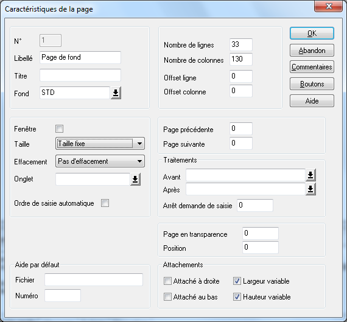

Cette page de fond permet éventuellement d'afficher des informations ou des boutons communs à toutes les pages des modes liste et fiche du zoom.
Page 1 : Obligatoire
Type de page : Page sans effacement
Exemple :

Remarques :
Si l'on souhaite que la taille du tableau du mode liste s'adapte au changement de taille de la fenêtre, déclarez cette page en Largeur et Hauteur variables.
Les éventuels objets inclus dans cette page doivent être placés (et attachés) en bas de la page.
Les éventuels boutons inclus dans cette page doivent avoir une portée globale.